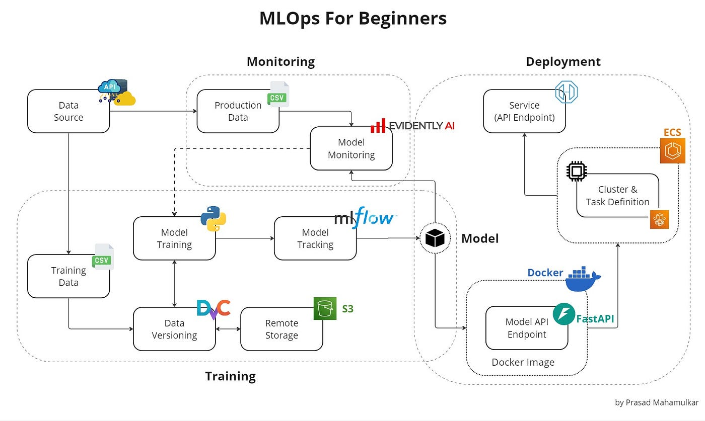
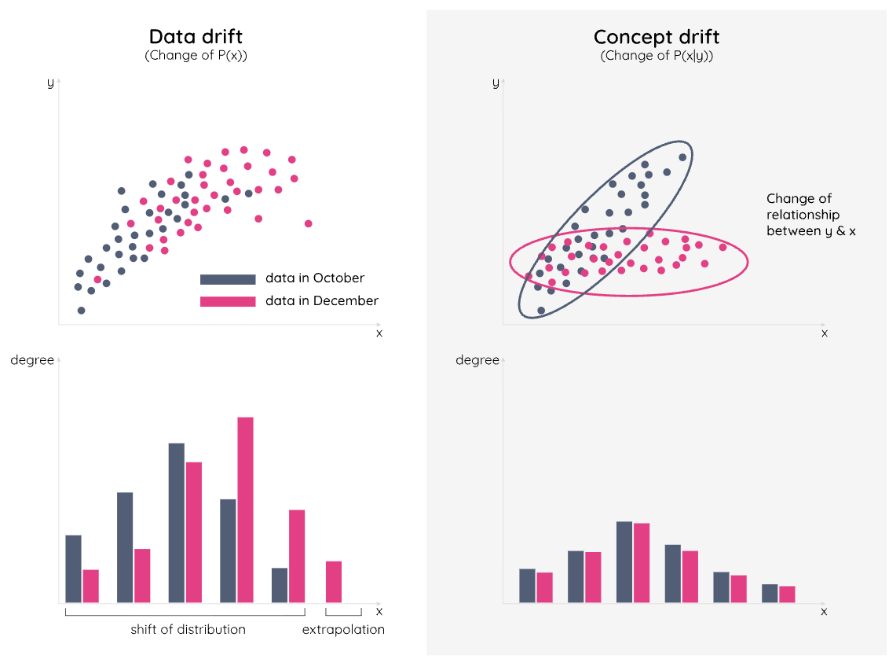

A Jupyter Notebook is a fantastic place for a Data Scientist to experiment, visualize, and train. But a model living in a `.ipynb` file provides zero value to a business. To actually drive decision-making, a model must be accessible, scalable, and monitored.
Over my career building end-to-end data products, I have found that bridging the gap between Data Science and Software Engineering is critical. Here is a practical breakdown of how to take a model from a local environment and serve it robustly in production.

Software engineers don't want to deal with pickled models, Pandas DataFrames, or PyTorch tensors. They want to send a JSON payload and receive a JSON response. FastAPI has become the industry standard for this over Flask due to its asynchronous capabilities and automatic data validation via Pydantic.
Here is a minimal, production-ready example of wrapping a trained model into a REST API:
from fastapi import FastAPI, HTTPException
from pydantic import BaseModel
import joblib
# 1. Initialize app and load the model into memory upon startup
app = FastAPI(title="Demand Forecasting API")
model = joblib.load("model_v1.pkl")
# 2. Define the exact data schema expected from the client
class PredictRequest(BaseModel):
temperature: float
day_of_week: int
historical_load: list[float]
# 3. Create the prediction endpoint
@app.post("/predict")
def make_prediction(request: PredictRequest):
try:
# Feature engineering/preprocessing would happen here
prediction = model.predict([[request.temperature, request.day_of_week]])
return {"status": "success", "forecast": float(prediction[0])}
except Exception as e:
raise HTTPException(status_code=500, detail=str(e))
The most dreaded phrase in engineering is "It works on my machine." To ensure your API runs exactly the same on your local laptop, a testing server, and the production cloud cluster, we use Docker.
A Dockerfile provides the recipe to build a lightweight, isolated Linux environment containing only your Python code, your model, and your exact library versions.
# Use a lightweight Python base image
FROM python:3.9-slim
# Set the working directory inside the container
WORKDIR /app
# Copy dependencies and install them first (Optimizes Docker layer caching)
COPY requirements.txt .
RUN pip install --no-cache-dir -r requirements.txt
# Copy the rest of the application (model files, app.py)
COPY . .
# Expose the port FastAPI will run on
EXPOSE 8000
# Command to run the application using Uvicorn
CMD ["uvicorn", "app:app", "--host", "0.0.0.0", "--port", "8000"]
Once containerized, the deployment process becomes highly automated. Using GitHub Actions, you can create a pipeline that triggers every time you push code to the `main` branch. This pipeline will:
Unlike traditional software, Machine Learning models degrade over time. The world changes, but the model's weights remain frozen. This makes monitoring the final, and arguably most important, step of MLOps.

By logging every request and prediction payload (using tools like Prometheus, Grafana, or Evidently AI), we can set up automated alerts. When the distribution of incoming API requests strays too far from our original training data, the system flags the team that it is time to retrain.
Building the model is the science. Deploying it reliably is the engineering. Combining both is how you generate real business value.